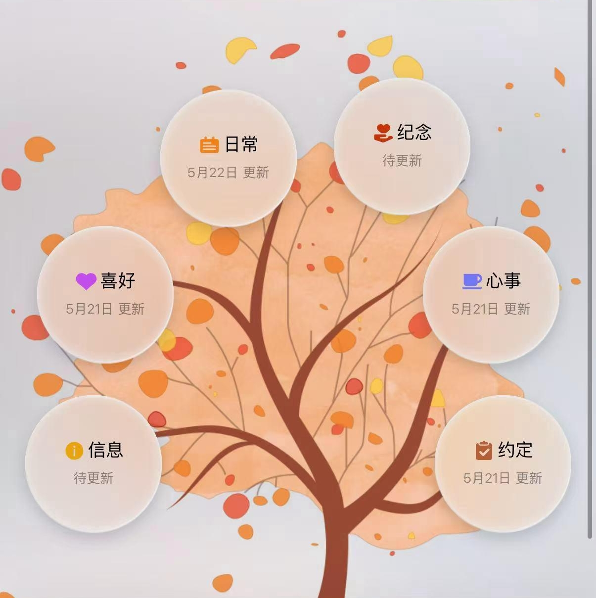
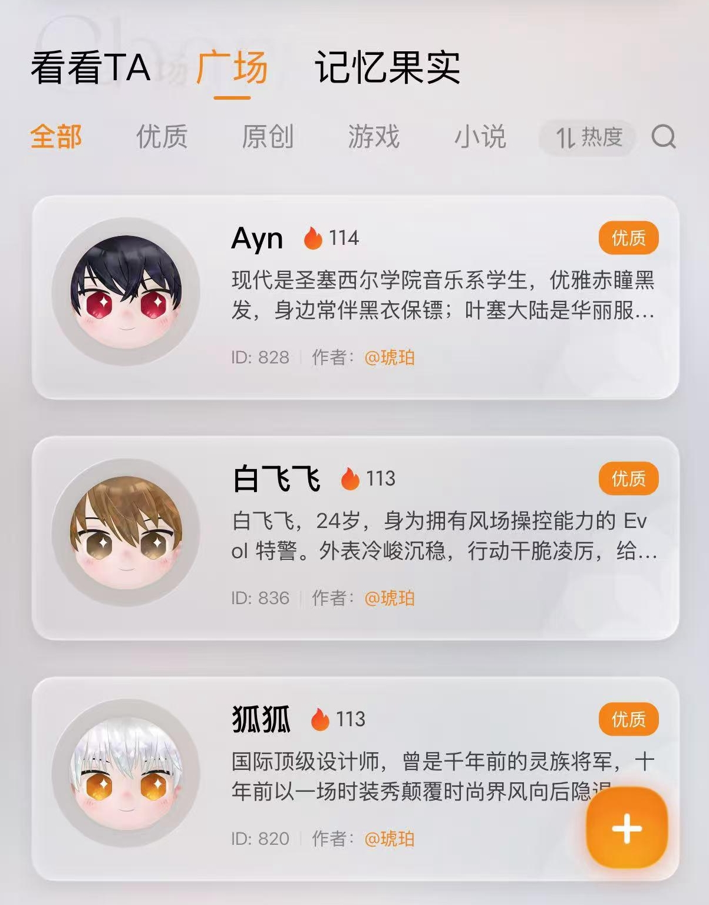
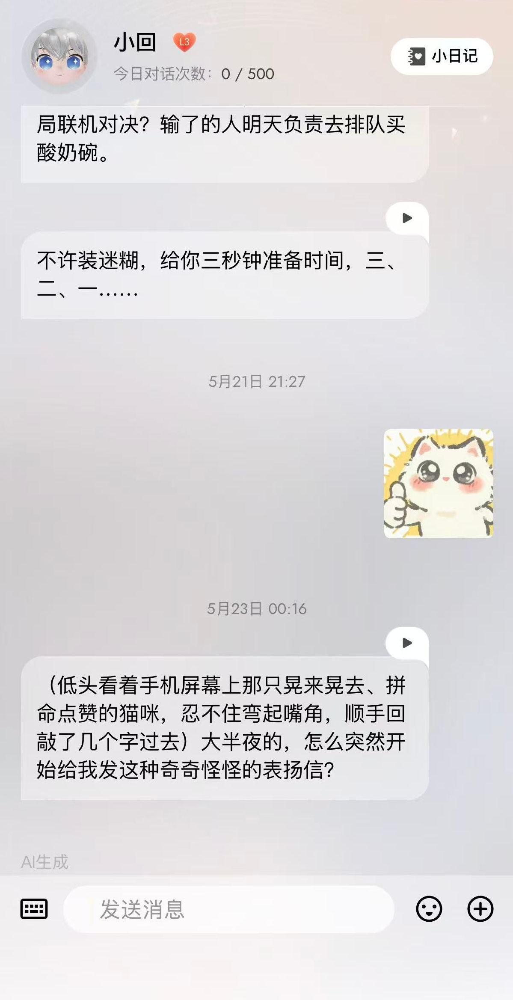
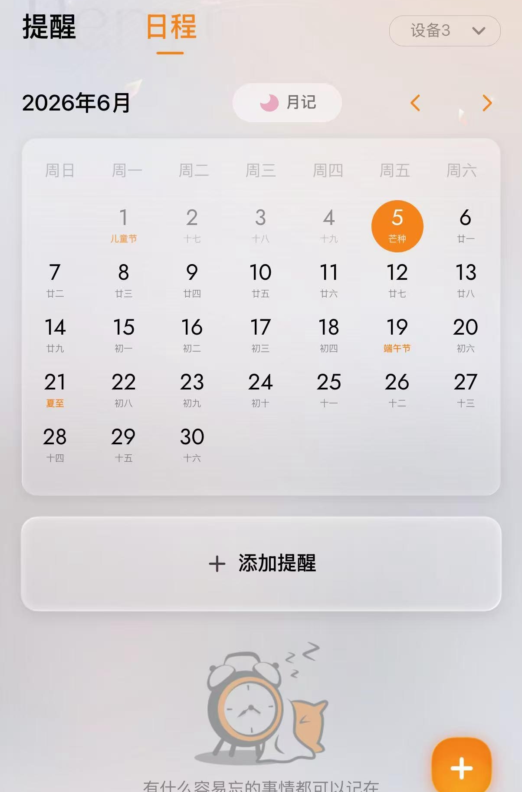

记忆模块割裂，
对话缺乏连续性。
系统仅依赖大模型上下文窗口维持短期记忆；一旦超出窗口，用户的偏好、习惯和重要事件便会丢失。用户连续聊了三天，角色却不记得第一天的内容，同一话题反复从零开始，陪伴感与人格连续性被严重削弱。
…我之前说过的
你还记得吗？
你还记得吗？
FAN SHUYUAN · CASE STUDY 01
2025TCL 雷鸟 · AI 情感陪伴硬件
为 AmbyUni 重构记忆与对话系统，让每一次聊天都可以成为下一次相遇的起点。
一台陪伴机器人，
不该只拥有 当下。
为提升用户使用率，我分析了 200 位测试用户的历史对话。结果显示，长时间陪伴被两件事打断：角色缺乏对关系细节的连续记忆，硬件端对话也因过长的生成链路失去自然节奏。
系统仅依赖大模型上下文窗口维持短期记忆；一旦超出窗口，用户的偏好、习惯和重要事件便会丢失。用户连续聊了三天，角色却不记得第一天的内容，同一话题反复从零开始，陪伴感与人格连续性被严重削弱。
从语音输入到机器人语音回复，需要经历转文字、记忆检索、回复生成、转语音、下载与播放，完整链路耗时超过 2 分钟。过长的等待破坏自然节奏，用户感到自己在和一台反应迟钝的机器聊天。
对原有架构解耦：豆包专注角色扮演，时间、空间等动态信息由 Minimax 预处理后经 User Prompt 输入。单次回答生成速度从超过 2 分钟降低至 100 秒内。
主导设计短期 10 轮、长期 50 轮的分层架构；长期记忆按情绪、偏好、意图与重要事件分类，并通过 Prompt 优化提升总结的准确性与信息密度。
基于长期记忆功能，设计小程序端的「记忆树」：用户点击记忆果实，即可看到对应的记忆内容，重新回看与角色共同经历的细节。




分析 200 位测试用户的历史对话，归纳出记忆连续性与硬件端响应延迟两类核心问题。
引入“上下文记忆 + 外部数据库 + 用户自监督摘要”的混合架构，定义长期记忆的完整工程路径。
拆解角色扮演与动态信息处理，让单次回复从超过 2 分钟缩短至 100 秒内。
从一段对话，
长成一段关系。
下一步
返回作品集 ↗